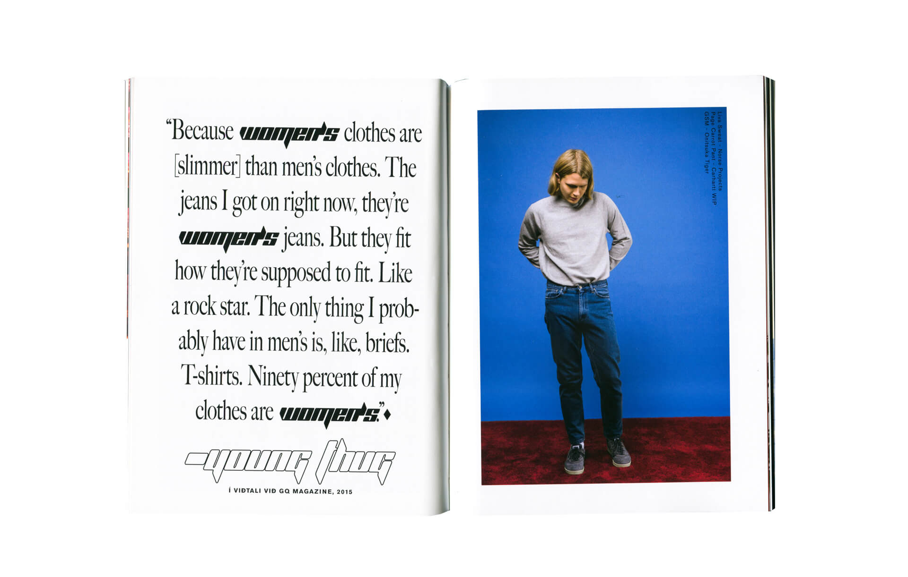
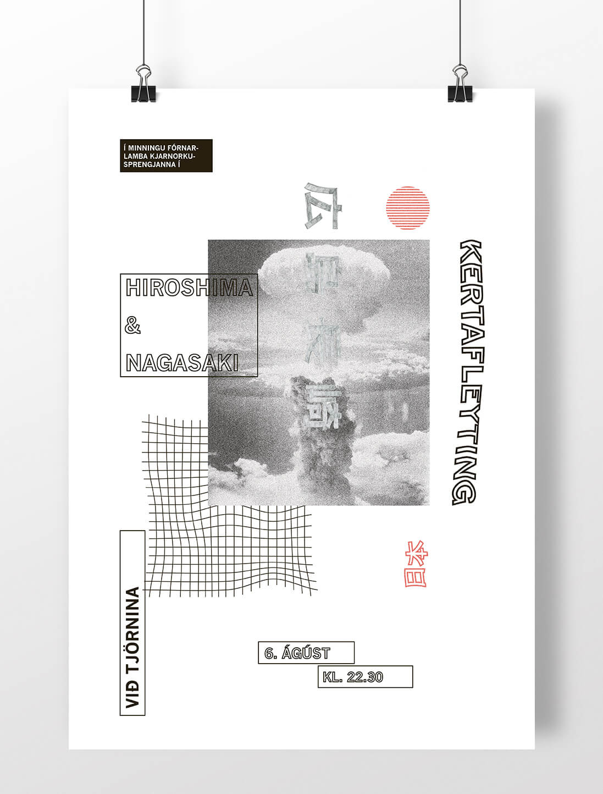
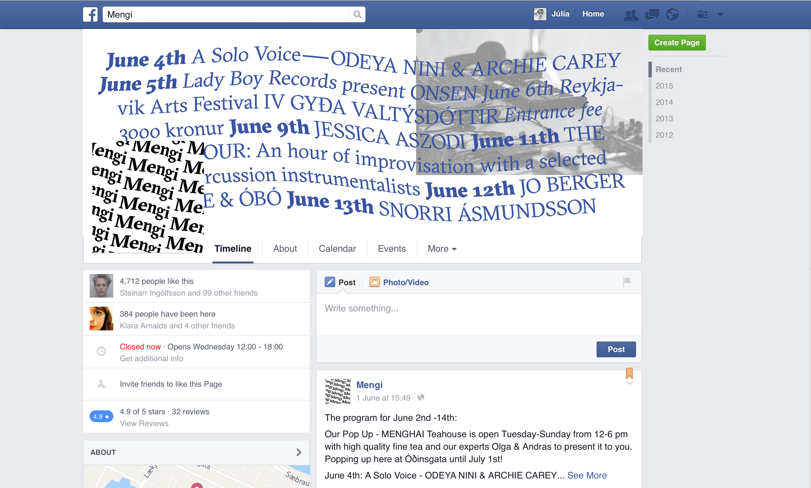

Júlía Runólfsdóttir is a graphic designer based in Reykjavík, Iceland. Her work focuses around design for screens, print and photography. Follow her photos on Instagram and words (mostly in icelandic) on Twitter. Below is some of her work, in no particular order
Húrra Reykjavík the Women's Issue is a magazine published by Húrra Reykjavík, a local fashion store. The magazine is focused on women, what inspires and drives them and their perspective on life. Art director and editor — Svanhildur Gréta Kristjánsdóttir. Graphic design — Júlía Runólfsdóttir. Photography — Snorri Björnsson and Hrefna Björg Gylfadóttir.

MÆNA is a yearly magazine about design in Iceland, published by the department of Design and Architecture in the Iceland Academy of the Arts, designed by third year students in the Graphic Design department. The team consisted of 14 students in their third year of study, editors Bryndís Björgvins & Lóa Auðunsdóttir, and art director Guðmundur Úlfarsson. The magazine was exhibited at the Hönnunarmars design festival in Reykjavík, 2016. The website, Mæna.is was in my hands, programming and designing.

Video directing, filming and editing for Hildur with Svanhildur Gréta Kristjánsdóttir.

Þjóðminjasafnið (National Museum of Iceland) was a rebranding school project. The brief was to attract younger families and freshen up the crowd of the conservative museum. Year: 2015.
Morkinskinna is Reykjavík Junior College’s yearly planner book. The aim of the design was for it to be playful, opposite of the school’s atmosphere. Year: 2015.
Branding and web design for Manifesto, a small consultation company in Reykjavík. Year: 2015.
Blær is a web-zine I co-founded in 2014. Blær works to bridge the gap between a magazine and a website, with binge publishing articles every two weeks. We aimed for the website to be both highly visual and interactive, with large photographs and short video loops. Decking four local awards for the project, including the Icelandic Graphic Design Award for best website and best student project, the aim was alway good user experience with a new kind of reading content on the web. Year: 2014–2015.
V81 is The Commercial College of Iceland's year book. Collaboration with Helga Dögg Ólafsdóttir. Year: 2014–2015.